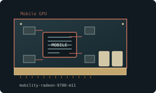

[ MOBILE GRAPHICS PROCESSORS // IDENTIFIED COMPONENT ]
ATI Mobility Radeon 9700 (M11) 128 MB
M11 / Mobility Radeon, 2003. This entry identifies one model or reference configuration; related products and OEM variants are distinguished below.

MODEL / VARIANT: Mobility Radeon 9700 is distinct from desktop Radeon 9700 Pro and Mobile Radeon 9600. No universal MXM interchangeability; laptop BIOS, thermal envelope and panel wiring are platform-specific.
Recorded specifications
| Cataloged product | ATI Mobility Radeon 9700 (M11) 128 MB |
|---|---|
| Generation / core | M11 / Mobility Radeon, 2003 |
| Core & memory | M11 mobile GPU; 4 pixel pipelines and 2 vertex units; 128 MB DDR on common discrete notebook configuration; memory width and clocks depend on laptop design. |
| Host interface & I/O | Notebook soldered or OEM module implementation; panel, LVDS routing and external outputs are defined by laptop motherboard, not a desktop add-in card. |
| Variant boundary | Mobility Radeon 9700 is distinct from desktop Radeon 9700 Pro and Mobile Radeon 9600. No universal MXM interchangeability; laptop BIOS, thermal envelope and panel wiring are platform-specific. |
| Archival identification | Record full part number, PCB or module revision, BIOS/firmware, device/subsystem IDs, driver version, adapters, physical condition and source-document edition. |
Compatibility, service & archival notes
Notebook configurations vary widely in memory, clocks, outputs and service access; mobile name alone is not a field-replaceable module standard.
Identify exact laptop model, GPU device ID, vBIOS and module form factor. Preserve original display-driver package and verify cooling assembly before replacement or rework.
- Check signaling, slot keying, lane width, power pinout, board/module dimensions, case clearance, airflow and PSU requirements for the exact specimen.
- Use drivers supporting its device ID and target OS. Preserve original installer and firmware copies, and record their versions before changes.
- Do not energize boards with corrosion, cracks, damaged connectors, obstructed cooling or suspected shorts; document condition before bench testing.
Manufacturer, model & standards sources
- ATI Mobility Radeon product familyModel/product-history reference; compare the exact card revision and nameplate.
- AMD/ATI legacy product and driver archiveManufacturer or archived product/driver documentation; exact OEM board details may differ.
- PCI Express interface standardHost interface reference; confirm exact physical and electrical compatibility.
Reference specifications do not supersede the board vendor's manual or nameplate. Performance figures are vendor claims unless explicitly identified as measured.